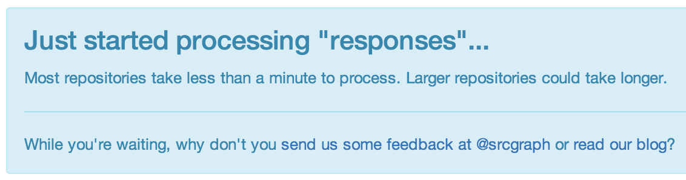

æ¥å° Sourcegraph 两个ææäºï¼æå¯ä»¥è¯´è¿éçæ¯ä¸å¤©é½æ¯æ¿å¨äººå¿çï¼è¿æ¯ä¸ä¸ªæçæ£åé æ´»åç startupãæ们çåå±é度ç¸å½ä¹å¿«ï¼æ¯ä¸å¤©é½åºç°æ°çç¹åï¼æè åç°ä»¥ååæ³çä¸äºå¤§å¹ 度ç®åãä¸å¾ä¸æ¿è®¤ Quinn å Beyang æ¯æ¯ææéåç人ãæè½ç¶ååºäº PySonarï¼å´è®©å®ç代ç æä¹é«éå¤å¹´ä¹ä¹ ï¼æ²¡æåæ¥åºåºæçä½ç¨ãè Quinn å Beyang çåäºè¿ç§ä¸è¥¿çä»·å¼ï¼åæä¸æå°ååºäº Sourcegraph.com è¿ä¸ªç½ç«ï¼æ使 PySonar å¯ä»¥åæ¥åºè¿ä¹å¼ºå²çææï¼ç¨ä»¥æç´¢å ¨ä¸çç Python 代ç ï¼ä¸ºå¹¿å¤§ç¨åºåé ç¦ãå½ç¶ï¼æ们çç®æ ä¸åªéäº PythonãSourcegraph ç®åæ¯æ Go, JavaScript, Python å Rubyãå ¶ä¸ Ruby çæ¯æè¿å¤äºåæ¥é¶æ®µï¼éè¦æ¹åï¼æ´å¤å ¶å®çè¯è¨æ£å¨å¼åä¸ã
ç»è¿ä¸¤ä¸ªææçå¤å¥å´åä¸ç¥ç²å¦çå·¥ä½ï¼PySonar2 ç代ç å¾å°äºå·¨å¤§çæ¹åãç°å¨æå¯ä»¥å¾èªä¿¡ç说ï¼å®å å«äºä¸çä¸æ强大çéæåæææ¯ãä»å¤© PySonar2 å·²ç»æ£å¼ä¸ Sourcegraph.com éæå®æ¯ãç°å¨åªè¦ç»å½ Sourcegraph 主ç½ç«å°±å¯ä»¥çå°å¼æº Python 代ç ç PySonar2 åæç»æã
PySonar2 çç±»åæ¨å¯¼ç³»ç»è½å¤ä¸ä¾èµç±»åæ è®°å´ç²¾ç¡®å°åæåº Python å½æ°çåæ°ç±»åãæ¯å¦ä¸å¾æ示ç Flask æ¡æ¶çæ常ç¨çäºä¸ªå½æ°çåæ°ï¼é½æ¯ç¨é常çæ¹æ³å¾é¾ç¡®å®ç±»åçï¼PySonar2 å´è½å¾ç¥å®ä»¬çæ£ç¡®ç¨æ³ã
ææææçæ¯é£ä¸ª render_templateãPySonar2 为å®æ¨å¯¼åºæ¥çç±»åæ¯ä¸ä¸ª intersection typeï¼
templating.render_template(template_name_or_list, **context)
str -> ?
| [str] -> ?
è¿æ¯è¯´ï¼ç¬¬ä¸ä¸ªåæ° template_name_or_list çç±»åæè
æ¯ str æè
æ¯ [str] ï¼å«æ str ç listï¼ãå¦æä½ ç»å® str å®å°±ä¼è¾åº ? ï¼PySonar2 ä¸ç¥éå®ä¼è¾åºä»ä¹ï¼ï¼èå¦æä½ ç»å® [str]ï¼å®è¾åº ?.
å¦æä½ æ³¨æä¸ä¸è¿ä¸ªåæ°çè±æå«ä¹ "template name or list"ï¼å°±è§å¾ä»¿ä½ PySonar2 è½è¯»æè±æä¸æ ·ãç¶è PySonar2 å ¶å®ä¸ä¼è±æï¼å®åªä¼ Pythonï¼å®éè¿ä»£ç ä¹é´çè°ç¨å ³ç³»åå¼å¸¸å¼ºå¤§çç±»åæ¨å¯¼ï¼æ¾å°äºè¿ä¸ªåæ°çç±»åã
Sourcegraph æä¸äºä¸ä¸ºäººç¥çå·§å¦è®¾è®¡ï¼ä½æ¯ç±äº Quinn å Beyang 太谦èèä¸å¤ªå¿äºï¼æ以é½æ²¡æ¥çåå®£ä¼ ãæç°å¨å·é²å¨è¿ééé²ä¸¤æå°çªé¨ã
ç®åè¿ä¸ªåè½åªéäº GitHubãå¦æå¨ Sourcegraph ç½ç«ä¸é¢æ²¡ææ¾å°ä½ éè¦ç GitHub 代ç åºï¼è¿ä¸çäºä½ éè¦çæ们æ¥å¯å¨åæãä½ å¯ä»¥èªå·±å¨æï¼
æ¹æ³å¾ç®åï¼æä½ ç GitHub å°åå»æ http://ä¹åæ¾å° http://sourcegraph.com/ åé¢ï¼ç¶å Sourcegraph å°±ä¼æ¾ç¤ºä¸ä¸ªçå¾
页é¢ï¼åæ¶èªå¨å¼å§åæè¿ä¸ª repoã

举个ä¾åï¼å¦æä½ æ³åæ http://github.com/myname/myrepo ç代ç ï¼å°±å¨æµè§å¨è¾å
¥å°åï¼
http://sourcegraph.com/github.com/myname/myrepo
å¦æ Sourcegraph è¿æ²¡æåæè¿è¿ä¸ª repo å®å°±ä¼æå®å å ¥å°å·¥ä½éåéï¼ç¶åä½ å¯ä»¥åå ¶ä»çäºæ æè æµè§å ¶ä»ç代ç ãåæå®æ¯ä¹åæµè§å¨å°±ä¼èªå¨è·³è½¬å°ä½ æéè¦ç代ç åºãä¸è¬å¤§å°ç代ç åºå åéå°å个å°æ¶å°±ä¼å¤çå®æ¯ã
ä½ ä¹è®¸åç°æäºäººå¨èªå·±ç GitHub éæ Sourcegraph å¾½ç« ï¼è¿æ ·ä¸æ¥å«äººå°±è½å¾ç¥ä½ ç代ç åºçä¸äºç»è®¡ä¿¡æ¯ãæ¯å¦æç psydiff ç README éé¢æè¿æ ·ä¸ä¸ªï¼
å®è¡¨ç¤º psydiff ç代ç 被çè¿ç次æ°ãä½ ä¹å¯ä»¥ä½¿ç¨å ¶ä»çä¸äºå¾½ç« ï¼æ¯å¦æ常ç¨çå½æ°ï¼äº¤åå¼ç¨æ°ï¼ç¨æ·æ°ï¼ççï¼
è¦å¾å°è¿äºå¾½ç« å¾ç®åï¼åªè¦å¨ä½ ç repo ç Sourcegraph 主页éç¹å»å¦å¾æ示çæ³æç¶å°å¾æ ï¼ç¶åæ "Image URL" æ·è´å°ä½ çç½é¡µéå°±è¡ï¼
Sourcegraph çåè½è½ç¶é常强å²ï¼ä½æ¯å¾å¤è®¾è®¡çå·¥ä½è¿å¤äºèµ·æ¥é¶æ®µãå¦æä½ æä»ä¹å»ºè®®æè åç°é®é¢ï¼è¯·èç³»æ们ï¼hi@sourcegraph.com.